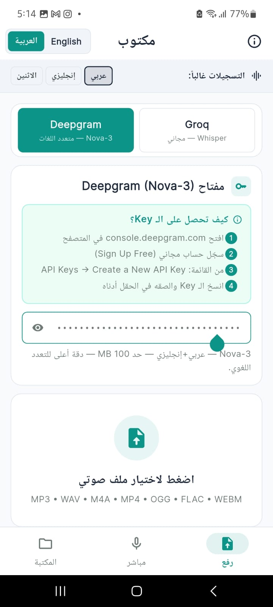
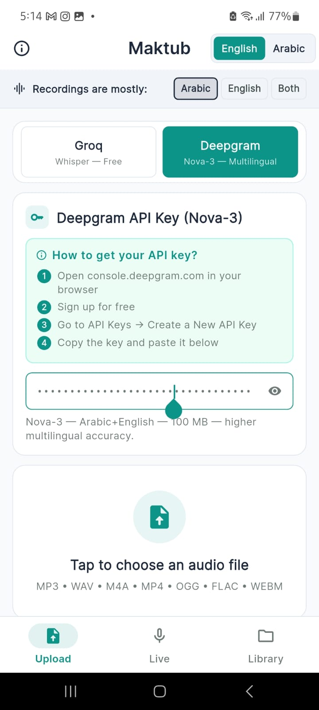
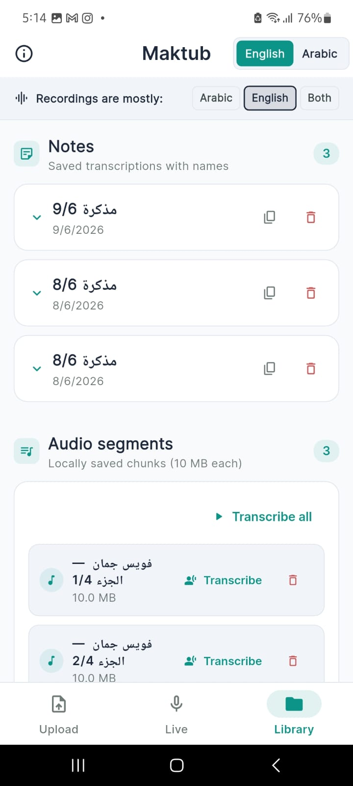
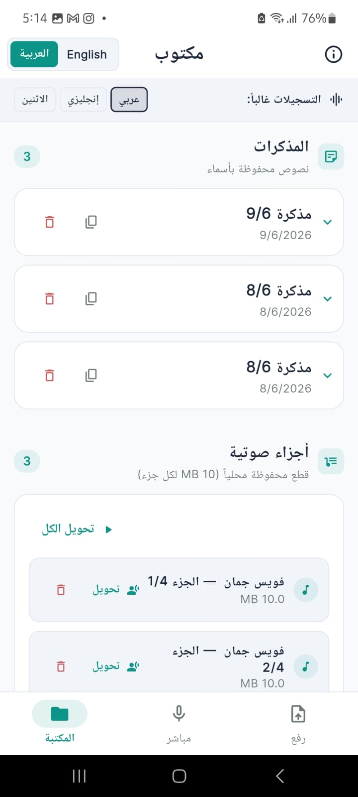
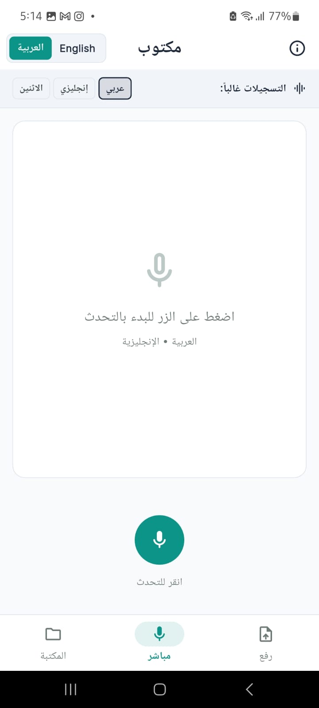

Maktub — Voice to Text
Maktub is a lightweight Flutter app that converts voice recordings into text using speech-to-text APIs.
It was born from a simple frustration: there was no clean, simple tool that fits the need.
Key highlights:
- Direct conversion from voice to text.
- Upload audio files and transcribe them.
- Supports two engines: Groq (Whisper) and Deepgram.
- Handles large files via automatic splitting into small parts.
- Local library for saving clips and notes.
- Bilingual interface (Arabic / English).
- Supports multiple formats: MP3, WAV, M4A, MP4, OGG, FLAC, WEBM.




